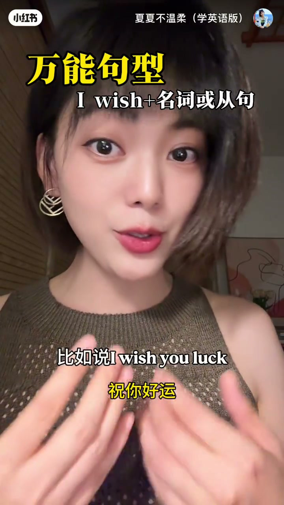
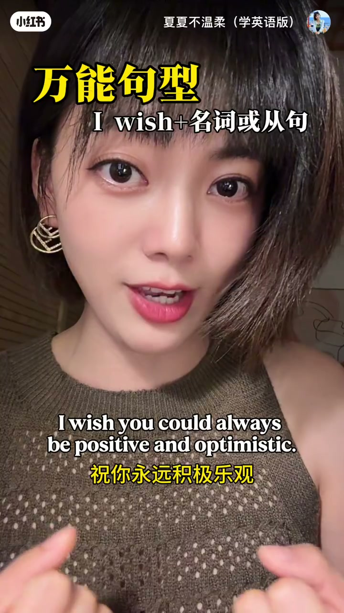

内容要点
内容限制：本条仅约 32 秒；Whisper 非空片段只有 2 条（开场祝福句 + 结尾「还有什么补充一下」）。主体教学内容主要靠画面大字幕与烧录字幕还原：句型「I wish + 名词或从句」，以及若干祝福例句。口播细节、更多例句的语音证据不足，下列以可得 ASR + 画面为准，不臆造未出现的例句。
账号「夏夏不温柔（学英语版）」用短视频教祝福场景的万能句型 I wish…。笔记描述写「万能句型I wish, 祝福的话可以一堆一堆咯」。ASR 已转简体。
知识结构
[画面]
句型
I wish + 名词或从句，用于祝福/愿望表达。
[画面例句]
示例
happiness in every moment；I wish you luck；always be positive and optimistic。
总结
可记框架 I wish + 名词/从句，再往里填祝福内容；完整语音课证据不足，建议对照原片字幕复习。
00:00–00:32画面主导的句型短片
开场口播接近「我祝你每时每刻都开心」，画面同步打出「万能句型 / I wish + 名词或从句」。随后切换多条英文祝福字幕（含 luck、positive and optimistic 等）。片尾用「还有什么」互动，ASR 对应「还有什么补充一下」——说明创作者把本条定位为可继续补充的句型卡片，而非完整讲座。
[00:01] 片头字幕：万能句型 I wish + 名词或从句；口播「我祝你每时每刻都开心」
Title card: pattern I wish + noun/clause; spoken Chinese blessing line.
[00:05] 英文字幕示例：I wish you happiness in every moment
On-screen English: I wish you happiness in every moment.

[00:12] 举例 I wish you luck／祝你好运
Example I wish you luck / wish you good luck.
[00:18] 主播微笑讲解万能句型结构
Host smiling while explaining the versatile pattern.

[00:25] 长句示例：I wish you could always be positive and optimistic／祝你永远积极乐观
Longer example: always be positive and optimistic.
[00:30] 结尾互动字幕「还有什么」；ASR 另有「还有什么补充一下」
Closing invite “what else?”; ASR also has a brief add-on line.
完整转录
我祝你每时每刻都开心
还有什么补充一下